Gallery#
General-purpose and introductory examples for NetworkX. The tutorial introduces conventions and basic graph manipulations.
Basic#

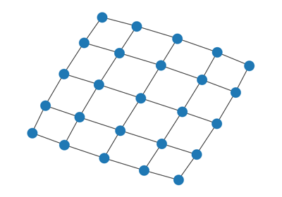
Read and write graphs.
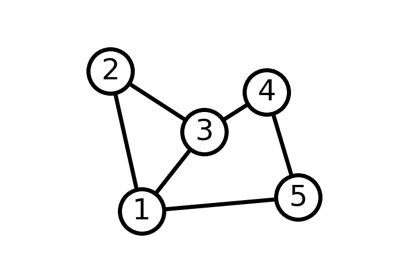
Simple graph
Drawing#
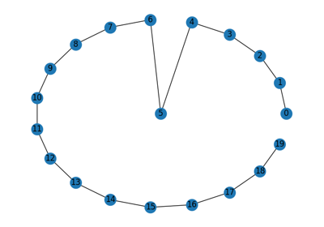
Custom Node Position
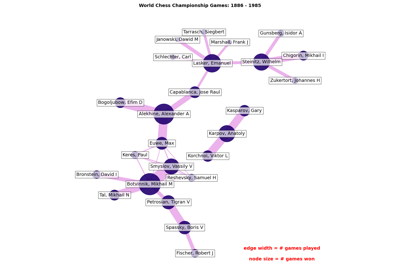
Chess Masters
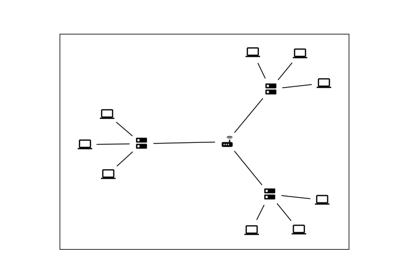
Custom node icons
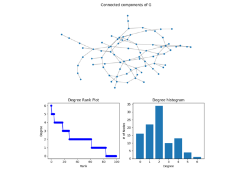
Degree Analysis
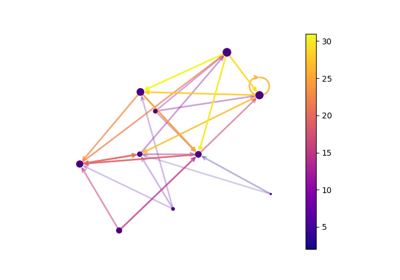
Directed Graph
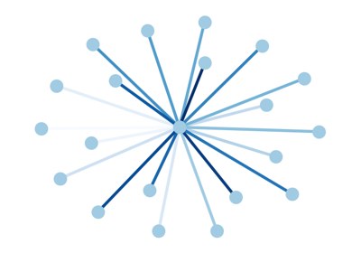
Edge Colormap
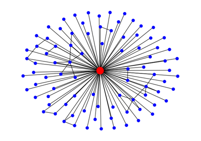
Ego Graph

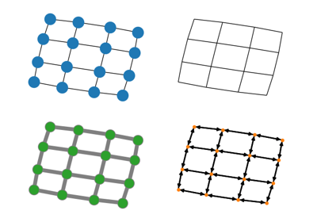
Four Grids
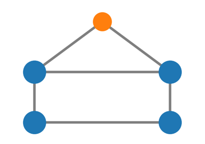
House With Colors
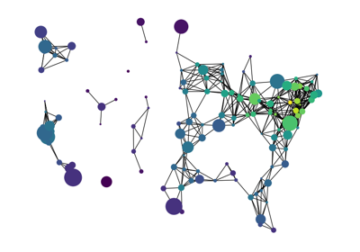
Knuth Miles
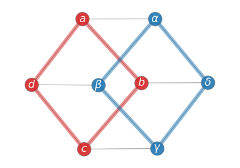
Labels And Colors
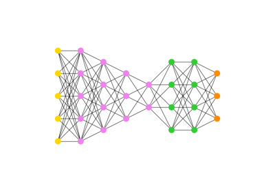
Multipartite Layout
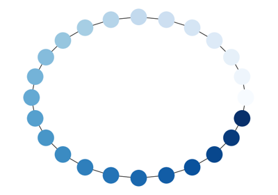
Node Colormap
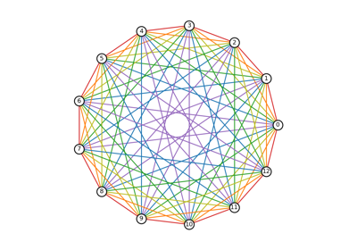
Rainbow Coloring
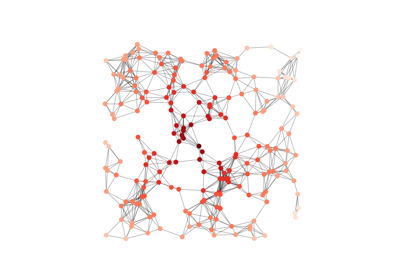
Random Geometric Graph
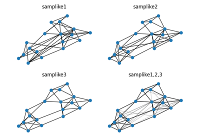
Sampson
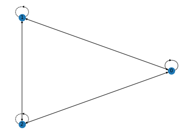
Self-loops
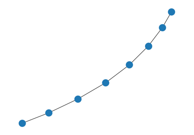
Simple Path
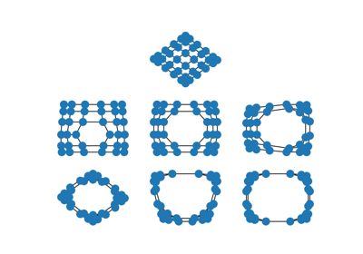
Spectral Embedding
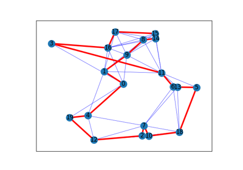
Traveling Salesman Problem
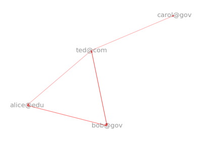
Unix Email
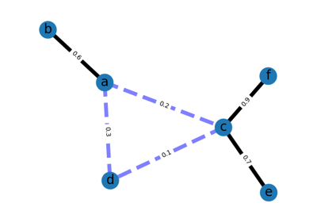
Weighted Graph
3D Drawing#

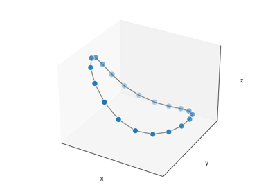
Basic matplotlib
Graphviz Layout#
Examples using Graphviz layouts with nx_pylab for drawing.
These examples need Graphviz and PyGraphviz.
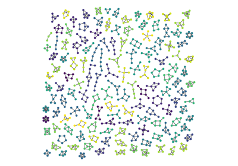
Atlas
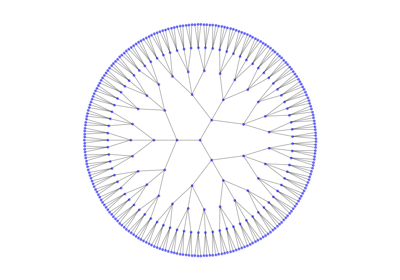
Circular Tree
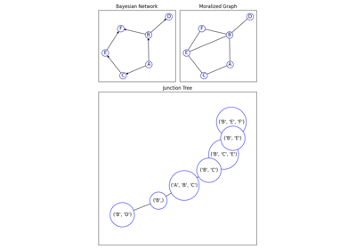
Decomposition
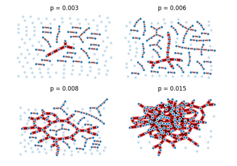
Giant Component
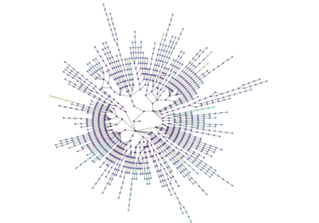
Lanl Routes
Graphviz Drawing#
Examples using Graphviz for layout and drawing via nx_agraph.
These examples need Graphviz and PyGraphviz.
Graph#
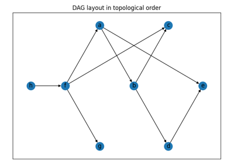
DAG - Topological Layout
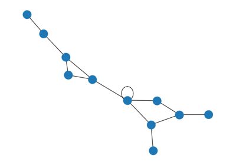
Degree Sequence
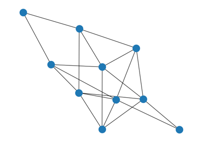
Erdos Renyi

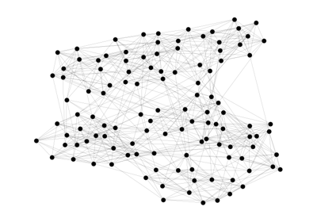
Football
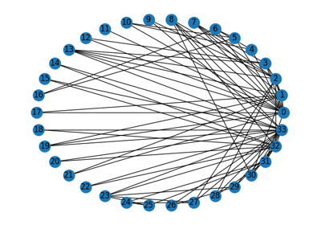
Karate Club

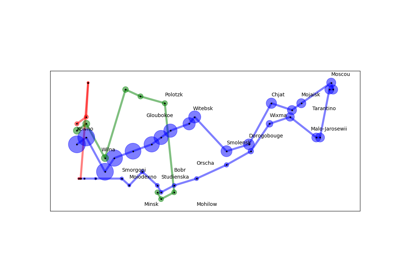
Napoleon Russian Campaign
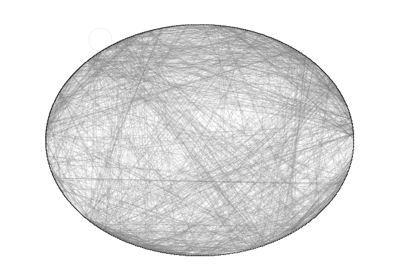
Roget
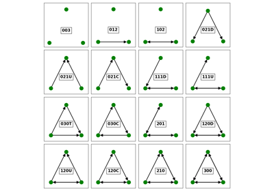
Triads
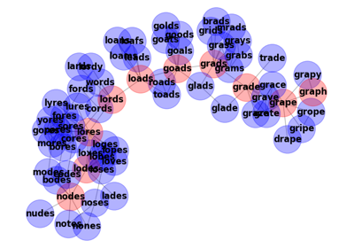
Words/Ladder Graph
Algorithms#


External libraries#
Examples of using NetworkX with external libraries.

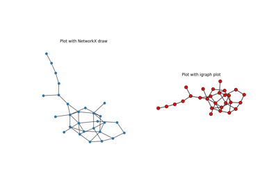
igraph
Geospatial#
The following geospatial examples showcase different ways of performing network analyses using packages within the geospatial Python ecosystem. Example spatial files are stored directly in this directory. See the extended description for more details.
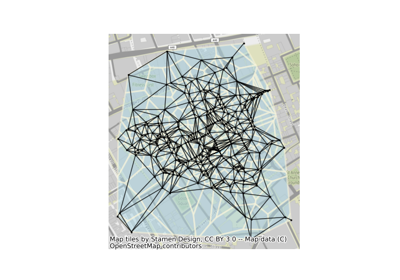
Delaunay graphs from geographic points
Delaunay graphs from geographic points
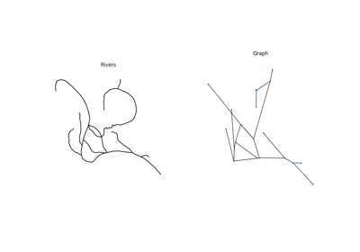
Graphs from a set of lines
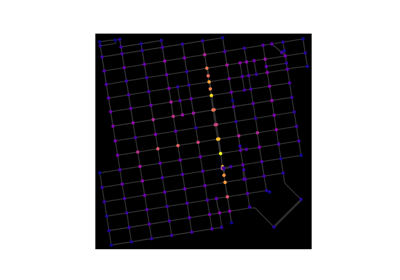
OpenStreetMap with OSMnx
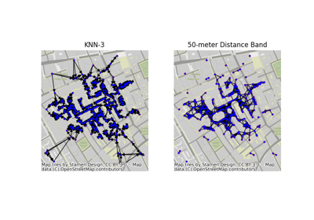
Graphs from geographic points
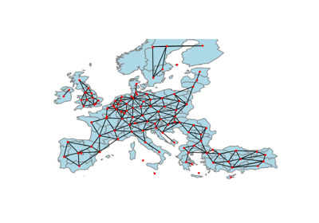
Graphs from Polygons
Subclass#
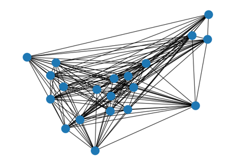
Antigraph
Print Graph